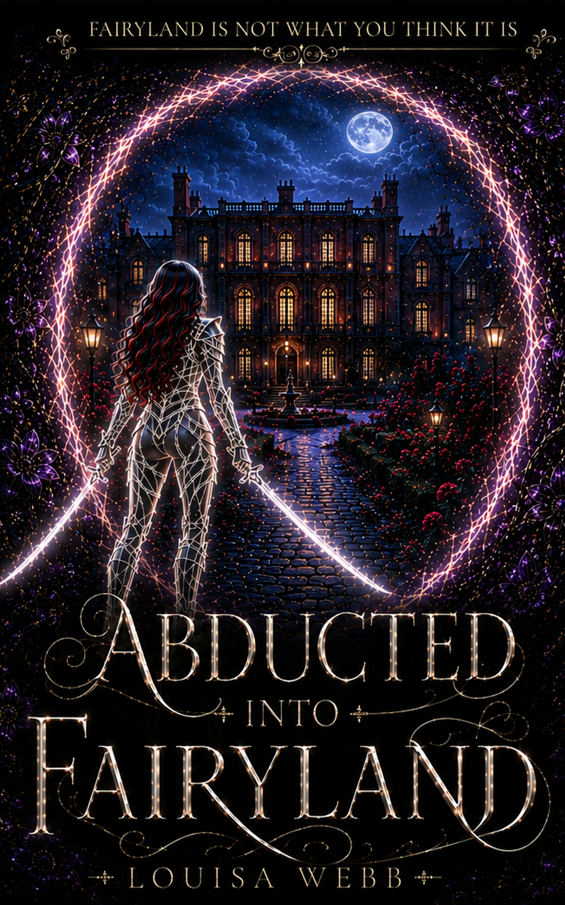

BOOK ONE · PUBLISHING 1 NOVEMBER 2026
ABDUCTED INTO FAIRYLAND
Fairyland may have other plans.
← Return to the series
Franziska Miller was supposed to be buying wine. Getting abducted into Fairyland was not on the shopping list.
At fifty-one, Franzi has a job, two teenage children and absolutely no reason to believe in magic. Then a grocery shopping trip ends with her drugged, kidnapped and thrown naked into a dungeon with one instruction:
Kill the Incubus, Wytch, and you’ll be free!
There are several problems with this plan.
- Franzi isn’t a wytch.
- The Incubus is far too attractive for her peace of mind.
- And after two years in chains, Damian Roseheart is considerably more interested in escaping with her than dying for his captors.
Then Franzi discovers that impossible is apparently a flexible concept!
Magic answers her! Portals open! Wounds heal beneath her hands! A sword suddenly feels as familiar as breathing. And when she is transformed into a Succubus, being a middle-aged purchasing manager from Germany becomes the least unusual thing about her.
Escaping should have been enough!
Instead, Franzi discovers that Damian is only one of countless prisoners being tortured, mutilated and drained for their magic. So she does what any sensible woman would do after being abducted into another reality.
She starts rescuing them.
Unfortunately, the people she frees include large, small and medium monsters, very important people and far too many dangerously attractive men. Every rescue pulls her deeper into a world of ancient rivalries, brutal politics and powerful magic, while the mysterious Facilities holding their victims point towards a conspiracy reaching across three Empires.
Franzi wanted to go home!
Fairyland may have other plans!
Abducted into Fairyland is Book One of Fairyland is not what you think it is, an explicit adult dark portal romantasy featuring a 51-year-old heroine, why-choose/polyamorous romance, morally complicated characters, dangerous magic, rescue missions, dark humour and a world where the monsters are not always the villains.